Edit Markdown, annotate PDFs, and run terminal sessions.
Monknot edits Markdown, HTML, source code, and plain text in their existing folders. Preview and export Markdown, search text and PDFs, and use optional on-device writing assistance.
All releases on GitHub Download started — open the .dmg and drag Monknot to Applications
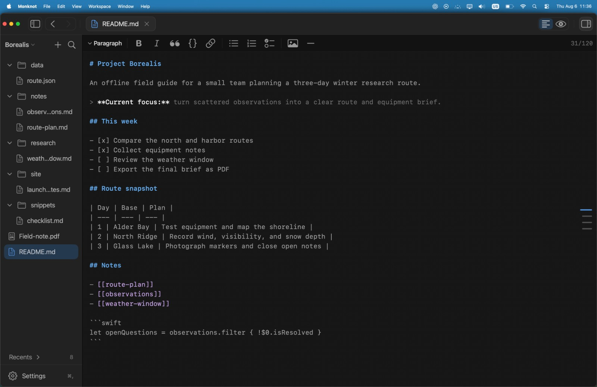
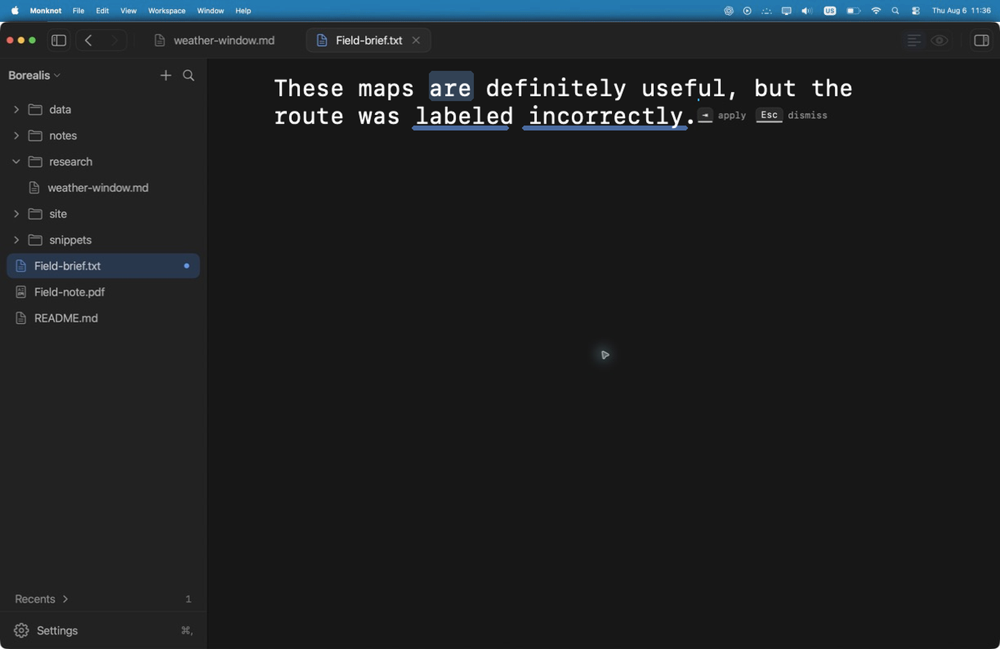
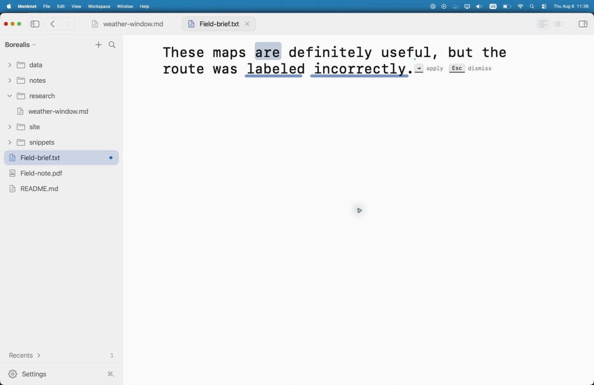
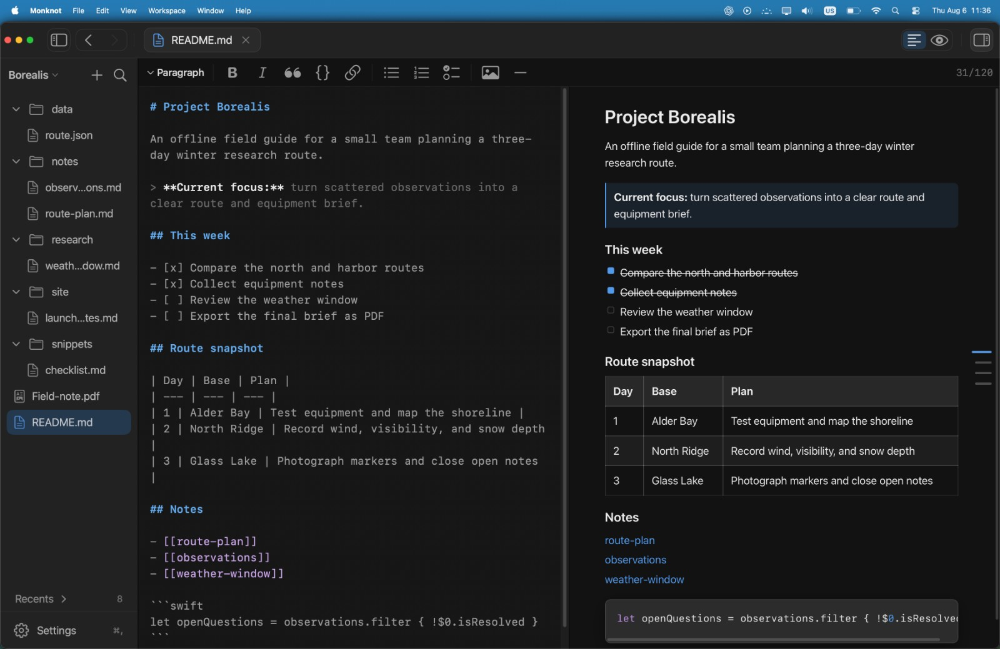
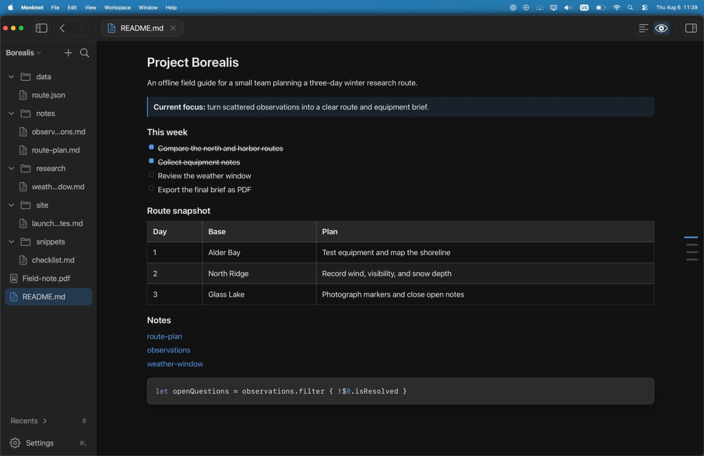
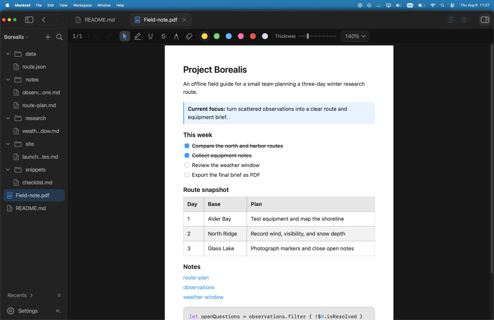
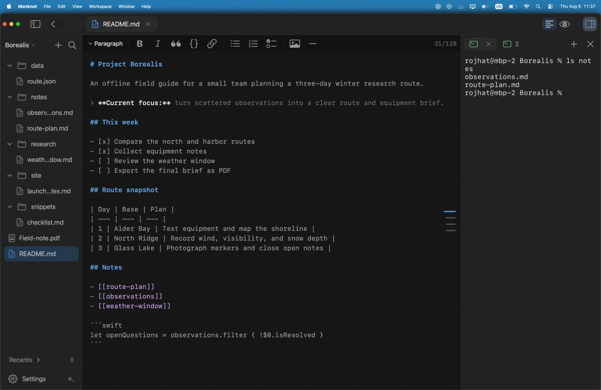
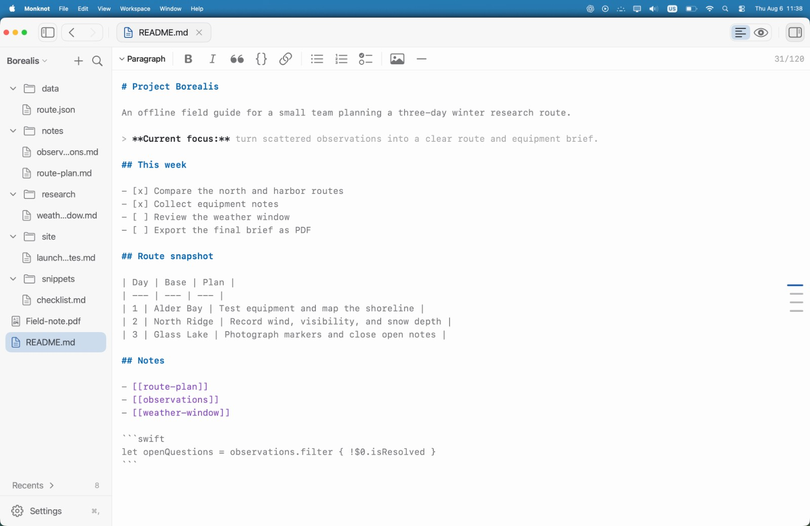
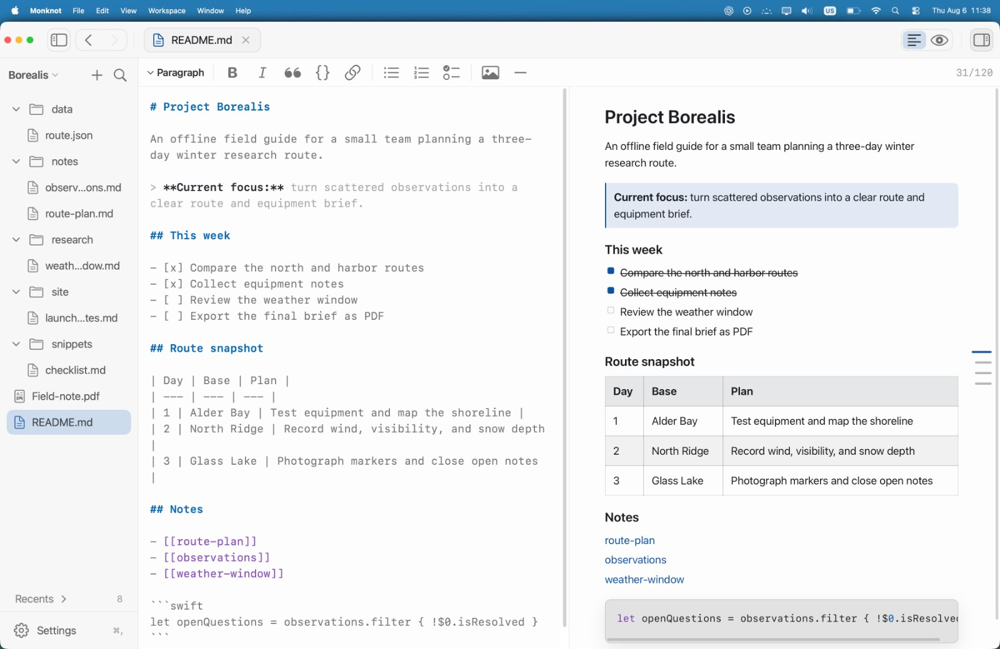
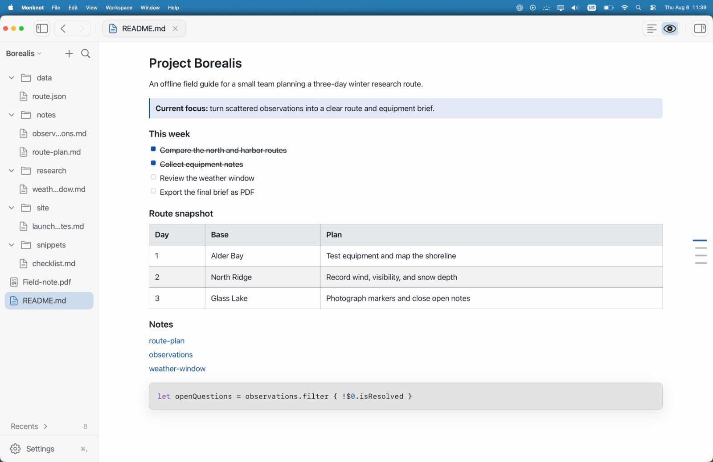
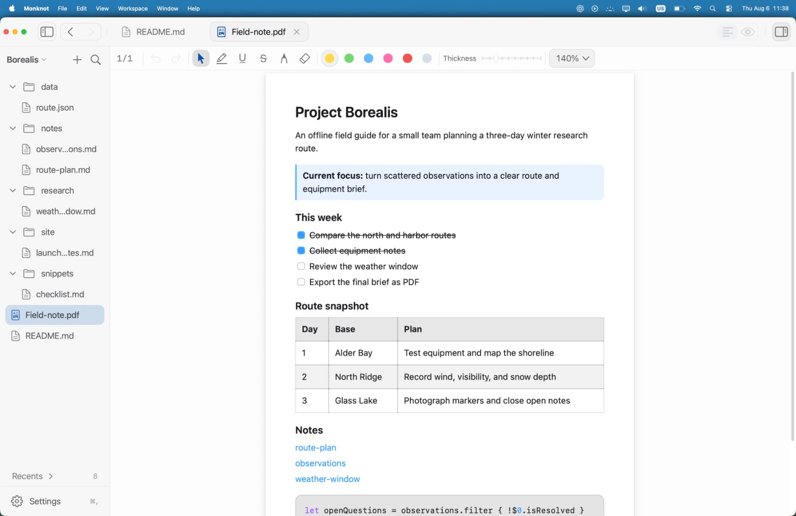
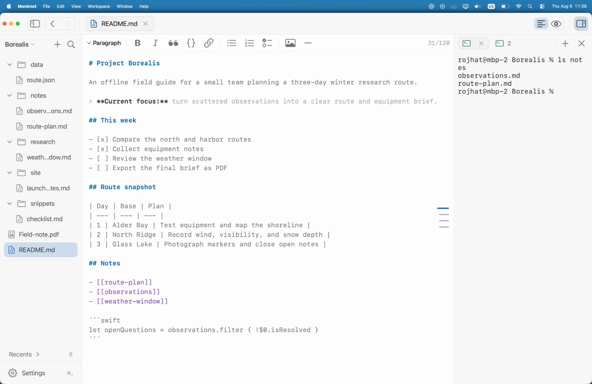
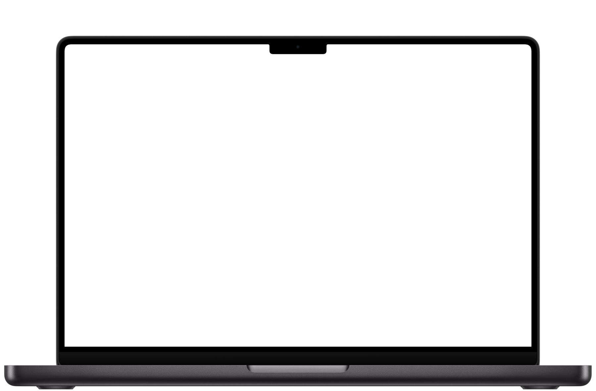
Edit Markdown and plain text with tabs, document search, and Markdown syntax highlighting.
19 light presets. 30 dark.
Choose separate light and dark presets. Adjust the accent, background, foreground, contrast, UI text size, and code text size in Monknot.
Axis
Axis · Light
Axis, light variant, shown in the preview.
- Edit Markdown, HTML, source code, and plain text
- Search text and selectable PDF text across a folder
- Preview scoped replacements and undo the last batch
- Quick Open, heading navigation, daily notes, and wikilinks
- Export Markdown to PDF and PDF annotations to Markdown
- Run multiple terminal sessions and search scrollback
Monknot
Apple silicon · macOS 14 or later